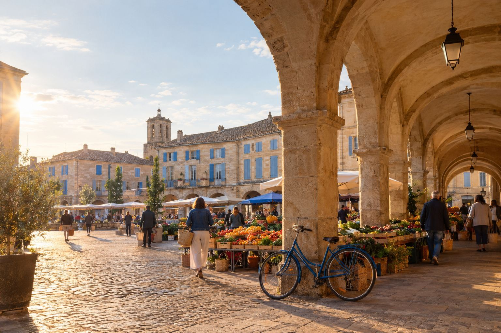

CAMILLE FERRAND · CANDIDATE À VALLENOIRE
Le quotidien d’une ville
qui nous

facilite la vie.
Camille Ferrand connaît Vallenoire rue par rue. Pas de grands discours : des mesures chiffrées, datées, vérifiables par tous à la fin du mandat.
LE PROJET EN 4 PILIERS
Ce qui change pour vous
Deux priorités, deux engagements de fond, 24 mesures concrètes.
24 MESURES · 4 PILIERS
CE QUI GUIDE CAMILLE
Une
campagne,
 3 façons d’agir.
3 façons d’agir.
3 façons d’agir.
0
Pas de promesses en l’air.
Pas de discours partisan.
Pas de solution toute faite.
Juste Vallenoire, ensemble.